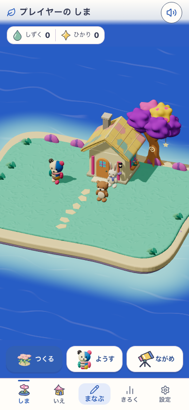
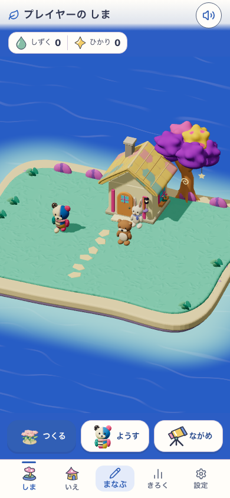
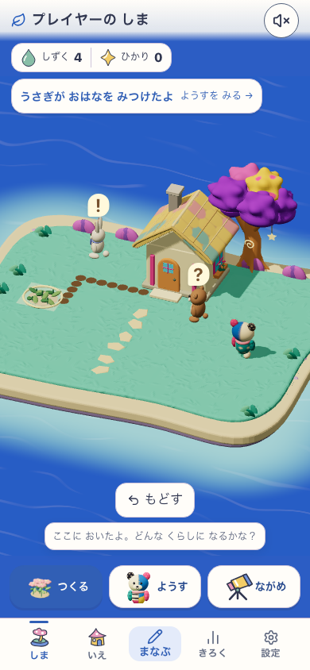
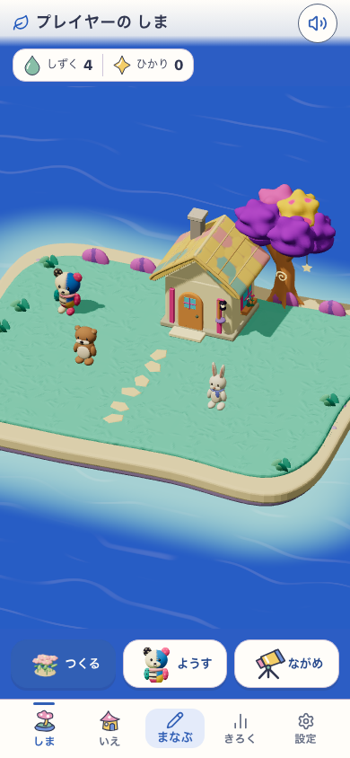
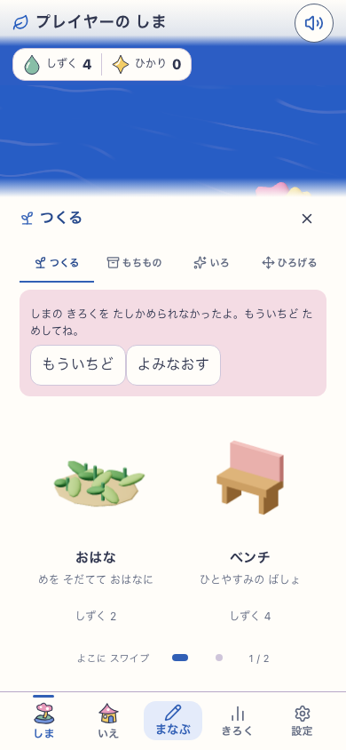
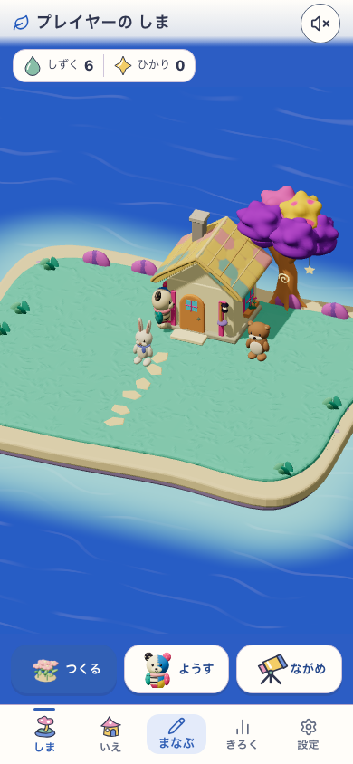
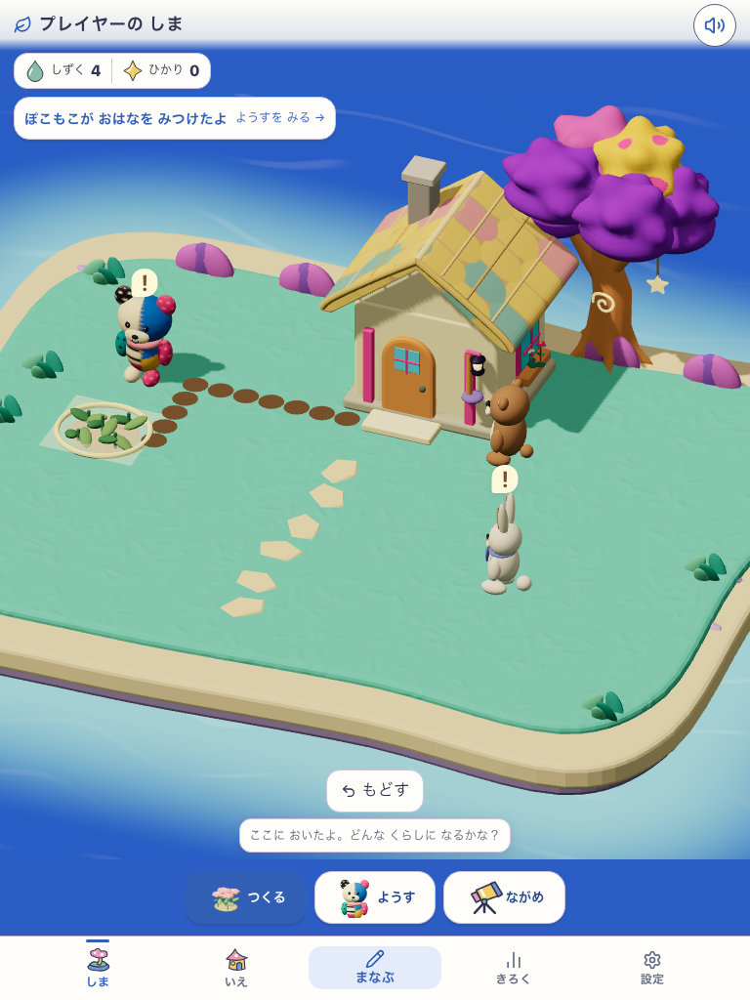
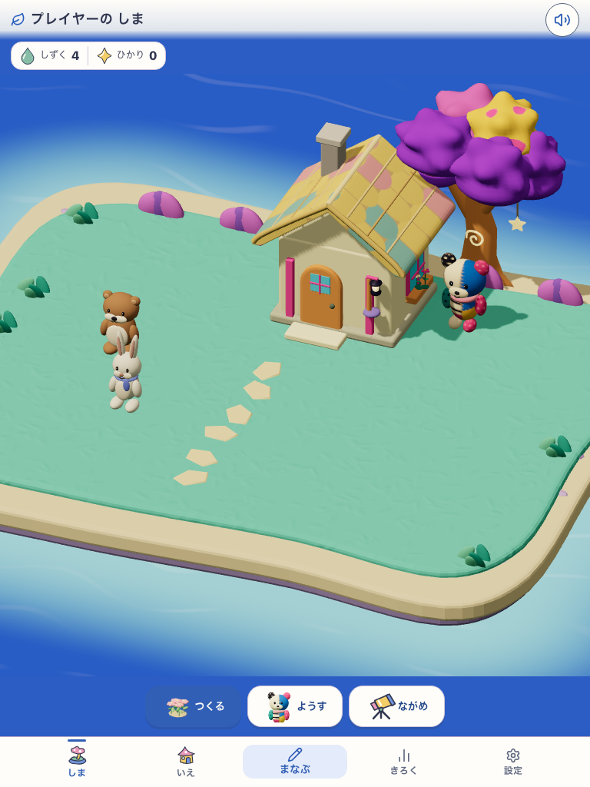
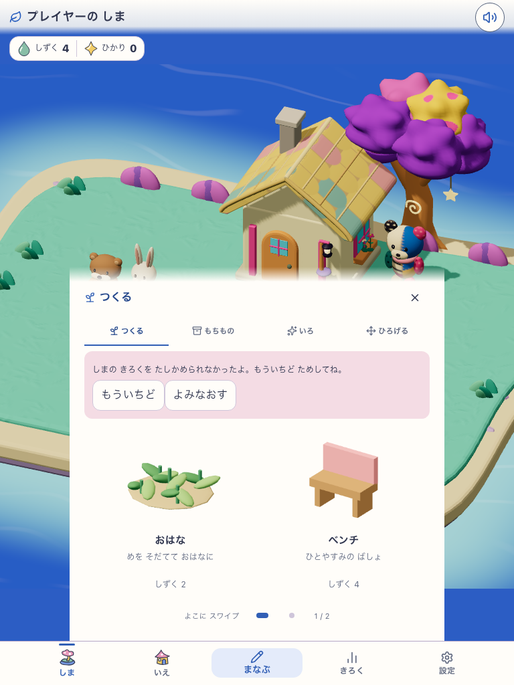
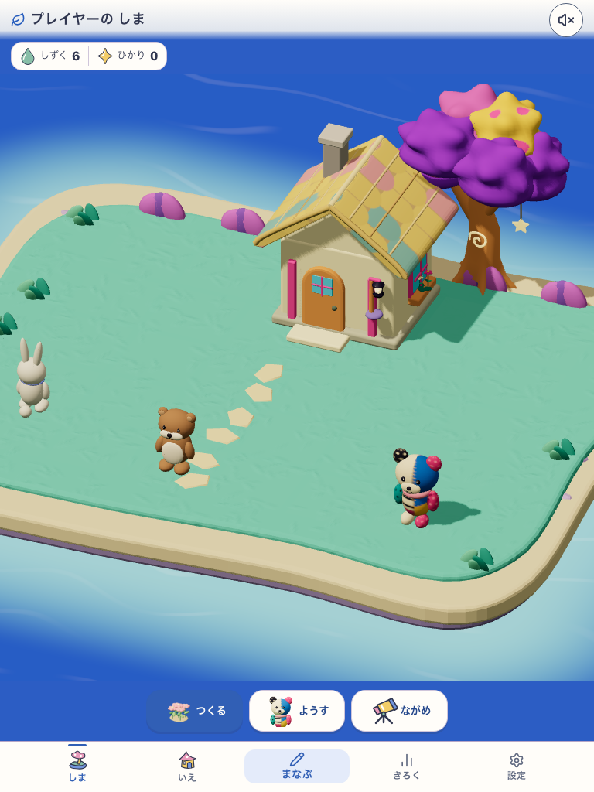

Baseline 788db3f / candidate life-scene-residents-only-v1. Local production http://127.0.0.1:5274; Island/Life enabled; generated GLBs off; observed moon-garden-v1. Isolated synthetic browser profiles. The failure screen uses explicit Life-write fault injection, followed by recovery. No real-device or participant claim.









